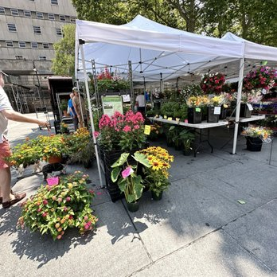
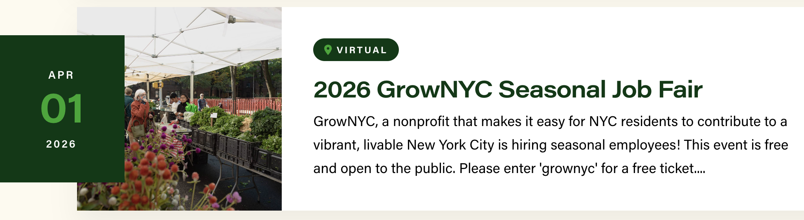

Farmers Markets

Here are some of the largest markets and when they are open
- Union Square Market, Year Round, Mondays, Wednesdays, Fridays and Saturdays 8am - 6pm
- Brooklyn: Grand Army Plaza Green Market, Year Round, Saturdays 8am - 4pm
- Queens: Jackson Heights Greenmarket, Year Round, Sundays 8am - 2pm
- Bronx: Bronx Borough Hall, Seasonal, Tuesdays 8am - 4pm
- Staten Island: Staten Island Mall Greenmarket, Saturdays, 8am - 4pm
More about markets

Work at the Markets
Every day, GrowNYC employees see first-hand the impact they have on the environment and the lives of New Yorkers in all five boroughs. We’re a non-profit organization founded 50 years ago, and we operate Greenmarket farmers markets. We hire many seasonal staff starting in the early spring such as Greenmarket Site Leads!
Job Fair
If you are interested in working for this dynamic organization to provide fresh food for all and reduce New York City’s carbon footprint, join our job fair and meet our team! At the Virtual GrowNYC Seasonal Job Fair, you will meet staff from each of our programs, hear more about seasonal and year-round jobs available at GrowNYC and get a chance to ask questions about working with GrowNYC.